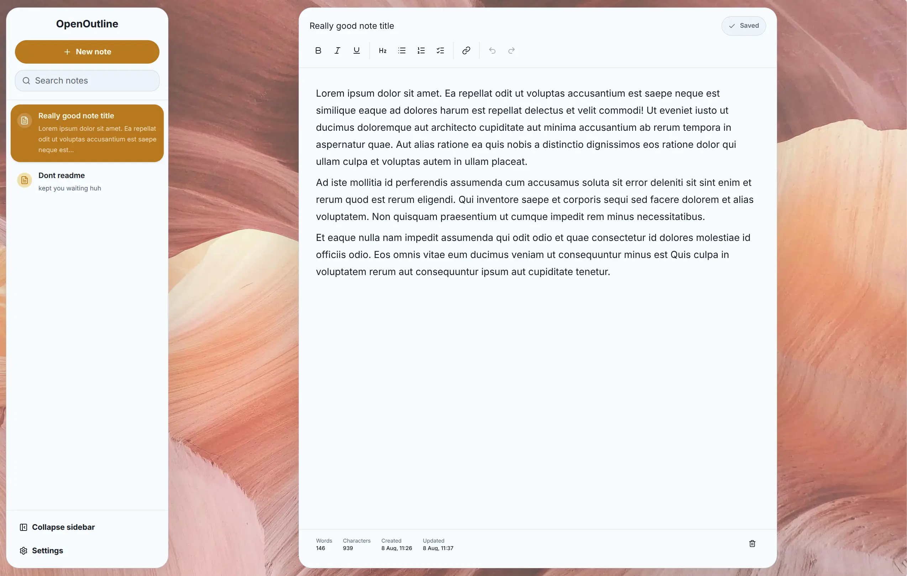
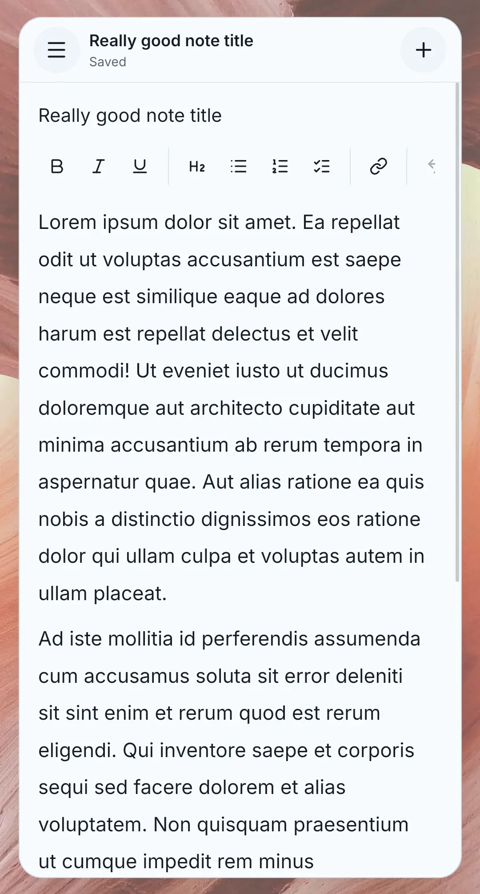

Text formatting
Use headings, bold, italic, underline, lists, links, and checkboxes.
OpenOutline is a focused note-taking app for notes, drafts, and checklists.


Use headings, bold, italic, underline, lists, links, and checkboxes.
Find notes by title or content as you type.
Arrange notes in the order that makes sense to you.
Changes save as you type, with a clear warning if a save fails.
Your notes stay available across desktop and mobile.
Choose colors, wallpapers, dark mode, and Transparent UI.